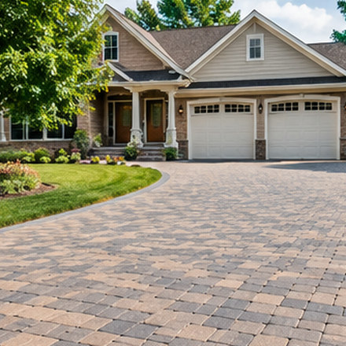
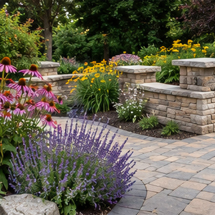

Paver Installation

Pavers offer a flexible way to shape outdoor spaces, from a welcoming front walkway to a patio or driveway. The appearance is important, but successful installation also depends on the ground beneath the finished surface.
This guide explains common applications, installation considerations and questions worth asking before beginning a paving project. A provider can advise on suitability following an assessment of your property.
Where Pavers Are Used
Patios and Entertaining Areas
Define space for dining, seating and walking without using a poured surface. Layout, furniture clearances and runoff all matter.
Driveways
Vehicle traffic calls for suitable paver strength, a stable base and carefully finished edges, especially near garages and road access.
Walkways and Entries
Stepping routes and entrance paths work best when designed around everyday movement, safe transitions and surface drainage.
Pool Decks
Consider traction when wet, heat in direct sun, expansion details, drainage and any applicable pool safety requirements.
What Goes Into a Paver Project?
Site evaluation: A provider will generally need to understand the current surface, access, soil, utilities and the proposed use of the area. Low spots, runoff and nearby structures may affect design.
Excavation and base preparation: Pavers rely on a properly designed and compacted foundation. Excavation depth and base materials vary by load, climate, soil and manufacturer guidance.
Layout and installation: Border treatments, edge restraints, joint spacing, cuts around curves and steps help establish the final finish. Some designs may include permeable paving methods where suitable.
Final checks and maintenance: Appropriate joint material, drainage, cleaning and periodic maintenance help keep the finished area functional. Individual pavers may sometimes be lifted and replaced if access or repairs are needed.
Materials and Design Choices
Common choices include concrete pavers, clay brick pavers and natural stone, each with different colour variation, texture, thickness, installation requirements and maintenance needs. Patterns such as running bond, herringbone and modular layouts can change the visual effect. Ask how materials are rated for their intended use and what the warranty—if any—actually covers.


Before Requesting a Quote
- Know the approximate dimensions and the intended use of the area.
- Note any pooling water, uneven ground, steps or difficult access.
- Identify the look or material you prefer, while remaining open to site-appropriate alternatives.
- Ask an independent provider about site preparation, drainage, permits, project timing and written scope.
A telephone inquiry is not a confirmed estimate or appointment. Any quote or work arrangement is made directly with the independent provider who accepts the enquiry.